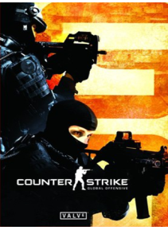

Counter Strike GO

R$32,91

Descrição do produto
Counter-Strike: Global Offensive (CS: GO) expandirá na jogabilidade de ação baseada em equipes na qual foi pioneiro quando foi lançado há 12 anos. CS: GO contém novos mapas, personagens e armas, além de conter versões atualizadas de conteúdos do CS clássico (como de_dust). Além disso, CS: GO introduzirá novos modos de jogo, criação de partidas (matchmaking), placares de líderes e mais.
Requisitos
Requisitos do Sistema: Windows XP / Vista / 7
Processador: Intel Core 2 Duo E6600 / AMD Phenom X3 8750
Memória: 2 GB RAM
Gráficos: 256 MB VRAM - GeForce 8600
HDD: 7.6 GB HD
Outro: Internet Banda Larga


© 2017 Alaff e Rodrigo Corporation. Todos os direitos reservados. Todas as marcas são propriedade dos seus respectivos desenvolvedores.